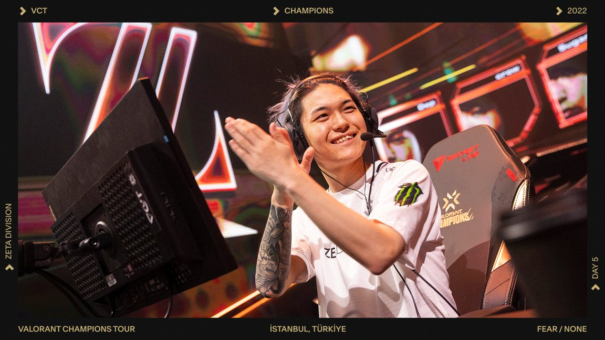
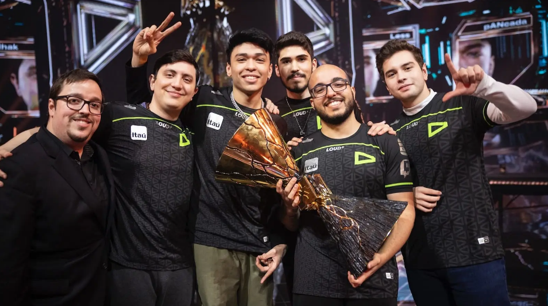

2022 Valorant Istanbul Champions Player Stat Analysis
As a Valorant player, you may be wondering what stats matter the most. We will analyze the player information from the best of the best to answer this. 2022 saw one of the biggest Valorant tournaments to date. The best players from all around the world competed to showcase their strengths. We can use this data to see what we should be doing as players. But who are these pro players?
Where is our Data Coming From?
Below are the players and where they are from, linked if they are teamates.
Do Headshots Matter?
Ask almost any Valorant player how important headshots are and they will say that the game actually revolves around them! But is this actually true? Is it possible that taking the extra effort in going for headshots does not actually pay off? What if the amount of times you die from wasting energy on the head leads to an overall lower Kill/Death Ratio? Does bragging about headshots really show committment to the team?
As we see from the pro player data, there seems to be very little correlation indicating that hitting more headshtos leads to a better K/D.
Will that Higher KD lead to better Performance?
We need a metric to decide how well players did as a team. The best way to do so is obviously to see which team did better in the tournament. We will use prize earnings to measure how well a team did. More earnings means a higher place in the tournament meaning a better performance as a team.
In the last plot we analyzed how headshots affect KD. Now let's see if KD is even a good metric for skill at all. We see from the plot that the highest winning players were on the top end of the KD range. So does this answer our question? Not fully. We see the highest KD player in the tournament making the lowest possible earnings. But look at his team! They had abnormally low KD's. We should instead consider the average KD per team. Conveniently, this plot is organized so we can do that. You don't need to be a veteran data scientist to see that the team with the highest earnings had the highest average KD ratios, while the lower earning teams had low average KD's. This tells us that KD is correlated with team performance, but only when we consider the whole team's KD. This means that teamwork is more important than having one person carry.

K/D Ratio By Agent?
Now that we have an idea of how important K/D is, what agent types should we pick to maximize KD? This applies on an individual level, but you can also use this chart to create team compositions to maximize overall team KD.
On the left we see each agent type and their average KD's in the tournament. We see that some roles have very different KD's than others, which makes sense. Of course duelists will have the best KD's. We can use this chart to decide what characters we want to play depedning on our own preferences. We can also use it to build team role compositions to maximize winning chances.

What have we Learned?
Remember that we are analyzing Pro Player data. This means that some of the analysis we have done applies only at the top level. This should not discourage us however, because our aim is to learn from the best of the best in order to become like them. At the end of the day, it is up to you to play the game how you want. You may not even want to maximize your performance. The main takeway from this is to make some cool discoveries from profesional data. Whether you choose to implement these into your playing style is up to you.
Anyways, we have seen how the elusive Headshot Percentage affects KD. To make it brief, at the pro level, it doesn't. This is because pro players optimize team play, strategy, and ability use to maximize their performace. In lower ranks, people are so worried about hitting headshots and one-tapping opponents. From this championship, we find that it is not as important as you would think. Next, to quanitfy that importance, we looked at how KD was related to team success. We found that overall team KD is way more important. This illustrates the obvious idea that teamwork makes the dream work. What we should learn from this is that you should trop trying so hard to carry your team. You should stop locking duelist and running in alone or trying to get a bunch of lurk kills. This showed us that quality of KD is much more important than just KD alone. You do of course need to focus on your own ability to get kills, but we should prioritize working together to ensure your team is able to do the same, and only then will you win more games. So how can we maximize team KD? Well we look at the breakdown of average KD by agent type, and we see trends that we should already know as Valorant players. Not all roles are designed to frag out. But you can use that information along with your own analysis and game preferences to find the playstyle and decisions that support you best. We can also use this to see what team compositions are best. An obvious example being that a comp with only sentinels or without any duelists probably wouldn't do so good.
Overall, we had a fun and interesting time exploring Valorant Pro Data, and we will only get more insight as more tournaments happen as time goes on.